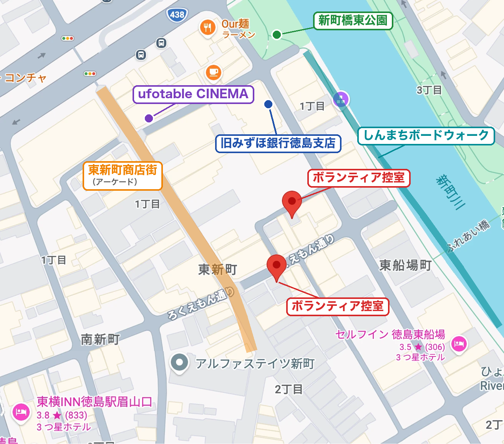

📢 お知らせ
🗺️ 会場マップ
🗺️
会場マップを開く（Googleマップ）
↗
📌 イベント概要
| 日程 | 10/17(土)・10/18(日) |
| 前夜祭 | 10/16(金) 16:00〜19:00 新町橋東公園ステージ |
| 集合 | 東公園ボランティアテント |
| 1部 | 8:30集合 → 9:00〜18:00（昼食あり） |
| 2部 | 11:30集合 → 12:00〜21:00（夕食あり） |
| 撤収補助 | 10/19(月) 9:00集合 → 9:00〜12:00 |
| 控え室 | 東新町商店街内・ろくえもん通り側 |
⚠️ 今回の要警戒ポイント
🔴 18日 10:00〜17:00 藍場浜 — 鬼滅→Re:ゼロ→アビス→TYPE-MOON系4連続→閉会式。観客が入れ替わらない
🔴 18日 12:00 新町橋東 — 乃木坂46×ビルディバイド。列を川沿い・橋の上に伸ばさない
🔴 17日 16:45〜20:00 藍場浜／18:00 新町橋東 — 3連続ライブ＋『超かぐや姫！』。夜に会場間を人が移動
🔴 18日朝 ポッポ街・東新町・アミコ5F — アズレン特装版、BanG Dream!、KADOKAWA、鬼滅くじ・カフェの開店前行列
チラシと公式で時刻・場所が違う企画あり（タイムラインは公式に合わせています）
🏕️ テント・本部
📍 藍場浜テント — 藍場浜エリアの拠点。迷子・落とし物・救護・アンケート記念品
📍 東公園ボランティアテント — 集合場所・東公園エリアの拠点。迷子・落とし物・救護・アンケート記念品
📍 西公園テント — 西公園エリアの拠点。落とし物
📍 ボランティア控え室 — 東新町商店街内・ろくえもん通り側（「エリア詳細」に地図あり）
🆘 相談・エスカレーション
緊急時（怪我・体調不良・迷子・不審者・強いクレーム）：すぐ八木・桑野へ。LINEより電話でOK
🔵 混雑・列・通り道 → 近くの混雑対応部 → リーダー
🔵 イベントルール・判断 → リーダー → 八木・桑野
🔵 パス・関係者対応 → 必ず混雑対応部へ（いなければ八木・桑野）
🔵 サウナ関連 → サウナスタッフ → 八木・桑野
🔵 コスプレ関連 → コミエス → 八木・桑野
判断に迷ったら「確認します」と伝えてリーダーor八木・桑野へ
📋 運営体制
| 統括 | 新居さん |
| 実働トップ | 八木 |
| サブ | 桑野 |
| 事務・調整 | 立花さん |
| 識別 | 白ベスト＝一般ボランティア／黄色ベスト＝リーダー・混雑対応部・八木・桑野など |
⚠️ ステージは基本すべて撮影禁止 🔴最警戒 🟠要注意 🟡注意
10/16(金) 前夜祭 16:00〜19:00 新町橋東公園ステージ
時刻はマチ★アソビ公式に合わせています（チラシと違う枠は注記あり）
藍場浜
東公園
西公園
ufo T1
ufo T2
ufo 1F
アミコ
あわぎん
阿波おどり会館
⚠️ 17日夜警戒：16:45〜20:00 MYTH&ROID→中川翔子→内田真礼の3連続ライブ。19:00に向けて東公園・西公園から人が流れ込む。終演後の一斉退場（国道318号・新町川沿い）に注意
⚠️ 18:00『超かぐや姫！』は夜間で1,000〜2,000人以上の見込み。永瀬アンナは11:30・15:30・18:00に出演し、日中から居続けるファンあり。終演後は藍場浜（19:00 内田真礼）へ移動する人が多い
⚠️ 18:00以降は藍場浜（19:00 内田真礼）へ移動する人の通り道に注意
ℹ️ 無料イベントでもワンデイパス（500円／1日1人1枚・複数購入分の払い戻しなし）が必要。整理券・入場の詳細はシネマスタッフへ
ℹ️ 無料イベントでもワンデイパス（500円／1日1人1枚・複数購入分の払い戻しなし）が必要。整理券・入場の詳細はシネマスタッフへ
ℹ️ 無料イベントでもワンデイパス（500円／1日1人1枚・複数購入分の払い戻しなし）が必要。整理券・入場の詳細はシネマスタッフへ
⚠️ アミコドームはアミコ2階デッキに屋根を付けた半屋外（駅直結）。観客と一般の通行人・買い物客が重なる。専用テントなし → 判断は近くのリーダー・LINEで確認
⚠️ 809席で満席の見込み。入場方式・お渡し会の条件は未公表 → 推測で案内しない
ℹ️ 阿波おどり会館は眉山ロープウェイ乗り場。鬼滅ガイドアナウンス・BASE CAMP・サウナ（眉山）目当ての行列が出やすい
藍場浜
東公園
西公園
ufo T1
ufo T2
ufo 1F
アミコ
あわぎん
⚠️ 18日最警戒：鬼滅→Re:ゼロ→アビス→TYPE-MOON系4連続→閉会式と大型IPが途切れず、観客が入れ替わらない。未明からの待機、熱中症・トイレ・荷物での場所取りに注意
⚠️ 12:00〜13:00は東公園（乃木坂46）とピークが重なる
⚠️ 12:00 乃木坂46×ビルディバイド（賀喜遥香・田村真佑）は2,000〜5,000人の見込み。11:00『運命の巻戻士』の客席が場所取りで埋まる。川沿い・橋の上に列を伸ばさない。アイドルファンは撮影禁止ルールを知らないことが多い
ℹ️ 無料イベントでもワンデイパス（500円／1日1人1枚・複数購入分の払い戻しなし）が必要。整理券・入場の詳細はシネマスタッフへ
ℹ️ 無料イベントでもワンデイパス（500円／1日1人1枚・複数購入分の払い戻しなし）が必要。整理券・入場の詳細はシネマスタッフへ
ℹ️ 無料イベントでもワンデイパス（500円／1日1人1枚・複数購入分の払い戻しなし）が必要。整理券・入場の詳細はシネマスタッフへ
⚠️ アミコドームはアミコ2階デッキに屋根を付けた半屋外（駅直結）。観客と一般の通行人・買い物客が重なる。専用テントなし → 判断は近くのリーダー・LINEで確認
シフトの担当業務を選んでください（全20業務）
↑ 担当業務を選ぶと
マニュアルが表示されます
迷ったら →「確認しますので、少々お待ちください」
基本姿勢・迷ったときの判断基準
すべての業務に共通
🧭 この順番で考える▼
- 安全が守られているか
- 人の流れが止まっていないか
- 来場者が不安になっていないか
- スタッフだけで抱え込んでいないか
📞 困ったときの相談先▼
- リーダー（黄色ベスト）
- 混雑対応部（黄色ベスト）
- 東公園ボランティアテント
- 藍場浜テント
- 八木・桑野
🚫 NG▼
- 推測で答えない
- 一人で判断しない
- 口論しない
- 走って急がない（安全最優先）
Vol31 新しく加わる企画
各企画の場所や詳細は、当日の公式案内を確認
🆕 今回の新企画▼
- ロープウエイガイダンスが3回ぶりに復活
- 眉山にキャンプ場を開設
- 旧みずほでコスプレと魔法陣のお披露目
- 阿波おどり会館でお酒のイベントを開催
🧭 案内で迷ったら▼
- 場所・開催時間・参加方法は公式案内で確認
- 分からない内容・判断に迷ったらリーダーか本部へ相談
🚫 確認せずに答えないこと▼
- 開催時間を推測で答えない
- 参加条件を推測で答えない
- 料金を推測で答えない
- 詳細を自己判断で決めない
「確認しますので、少々お待ちください」
と伝え、リーダーか本部へ確認します。
#01 ステージイベント 会場整理誘導
藍場浜・新町橋東公園・西公園・アミコドームなど
⏰ 開演前▼
- 観覧エリア・通路の確認
- 最後尾がわかりやすいか確認
- 撮影禁止札・表示の設置場所確認
- 車道・階段付近に列が伸びていないか確認
- 体調が悪そうな人・日なたに長時間いる人を確認
🎤 開演中▼
- 通路がふさがっていないか巡回
- 撮影禁止札を持ちながら周辺を巡回
- スマホ・カメラを構えている人に声かけ
- 体調不良者がいないか確認
🚪 終演後▼
- 出口で人が詰まっていないか確認
- 次の待機列と退場する人の通り道が重ならないか確認
- 出口・通路への誘導
- 体調不良者がいないか確認
⚠️ 終演直後が最も混雑しやすい！早めにリーダーへ状況共有
📍 10/17（土）藍場浜公園ステージの混雑に注意▼
10/17（土）は藍場浜公園ステージで10:00〜20:00に公演予定。
終演後の退場と次の待機列が重ならないよう、後方と左右の通り道を確認する。
#02 撮影禁止対応（撮禁A・B交代制）
藍場浜・新町橋東公園・西公園
🔁 A/B交代制のルール▼
- Aの番：A が撮影禁止札を持って巡回、B は待機・休憩
- Bの番：B が A の代わりに担当、A は休憩
- 交代タイミングはシフト表またはリーダーの指示に従う
📋 声かけの流れ▼
- 来場者から見える位置に撮禁札・表示を出す
- スマホ・カメラを構えている人に落ち着いて声かけ
- それでも続ける場合 → リーダー・八木・桑野へ共有
「大変恐れ入りますが、こちらのエリアでは撮影はご遠慮いただいております」
「撮影禁止となっておりますので、カメラのご使用はお控えください」
📍 確認すべき場所▼
- ステージ正面・横・後方
- 橋の上・対岸・歩道側（撮禁と知らない人がいる）
- 観覧者の列の中・後方
🚫 絶対にやってはいけないこと▼
- 来場者のスマートフォン・カメラに触る
- 撮影データの削除を個人判断で求める
- SNS投稿の削除を個人判断で求める
- 強い口調で注意する・来場者と口論する
📸 撮影OKの例外▼
演者が「撮影OK」と言ったら、撮影禁止札を下げ、八木・桑野にLINEで報告。
⚠️ 30分以上同じ場所に立つこともあります。自分の体調も確認してください。
#03 立ち上げ・撤収
開場前・閉場後の準備と片付け
🔧 立ち上げでやること▼
- 三角コーン・バーの展開
- 撮禁札・案内表示の設置
- パラソル各ブースへの資料等を配布
- 出展者・ブース担当者への挨拶
- ブース位置・通り道・問い合わせ場所を確認
- パラソル設営の簡単な補助
- 本部テント・パス受け取り場所を案内
立ち上げの挨拶 = 当日の連携づくり。顔を覚えてもらうと助かる！
📦 撤収でやること▼
- 三角コーン・バー・案内表示の回収
- 撮禁札・備品の回収
- パラソル周辺の忘れ物・ごみ確認
- ブース担当者への終了確認・挨拶
- 残置物・破損物の確認
- 余った配布物・看板等の回収先確認
- 本部への完了報告
⚠️ 注意点▼
- 重いもの・大きいもの・風であおられやすいものは一人で無理に持たない
- パラソルが開かない・備品が見つからない・配布物の置き場所がわからない → わかる範囲で補助し、判断が必要な内容は八木・桑野へ
#04 受付対応（各テント）
東公園ボランティアテント・藍場浜テント・西公園テントなど
✅ 受付でできること▼
- スタッフへの集合・受付案内
- シフト表・配布資料の確認
- 持ち物・服装の確認補助
- 迷子・落とし物・体調不良者の受け入れ
- 来場者への場所案内（テント・トイレなど）
❌ 本部・リーダーに確認が必要なこと▼
- シフト変更・人員追加の判断
- スタッフの体調不良対応・帰宅判断
- 来場者クレームの受け付け・対応
- 緊急時・救護対応の指示
- 記念品の在庫・配布条件
- 現金・貴重品の管理
🍋 アンケートのお礼（スダチ）の渡し方▼
- 来場者がアンケートQRを読み取って回答済みであることを確認
- 袋に数個入れたスダチを渡す（在庫切れはリーダーへ確認）
- 記念品の在庫状況をこまめにリーダーへ報告
🕘 集合情報・控え室▼
- 1部：8:30集合 → 9:00〜18:00活動（昼食あり）
- 2部：11:30集合 → 12:00〜21:00活動（夕食あり）
- 翌日撤収（10/19）：9:00集合 → 9:00〜12:00
控え室：東新町商店街内・ろくえもん通り側
#05 遊撃・応援対応
会場を広く見て、困っている場所を手伝う
📋 主な役割（リーダーから指示あり）▼
担当場所を決めず、困っている場所を手伝う役割です。仕事内容は当日の状況で変わります。
- 急に伸びた列の列形成支援・最後尾札の補助
- 通路で立ち止まっている人への声かけ
- ステージ終了後・物販開始前後の誘導補助
- ブース・展示・体験企画の待機列があふれそうな場合の状況確認
- 駐輪場・コルネの泉周辺の巡回・通行確保
- 問い合わせが集中している場所への一時応援
- 本部・テント・現場間の連絡補助
- 備品・ごみ袋・記念品などの運搬補助
- 迷子・体調不良・落とし物などをすぐにリーダーへ知らせる
- 「なんか詰まりそう」「この列わかりにくい」などの違和感を拾って共有
💬 共有テンプレート▼
【遊撃】〇〇エリア、〇〇が△△の状況です。最後尾がわかりにくく、通行と混ざり始めています。列位置の判断と追加スタッフが必要です。
⚠️ 安全が最優先▼
慌てて走ったり、車道・水辺・階段付近で無理に移動しない。指示が重なった場合はリーダーへ確認。
#06 ポッポ街商店街エリア巡回
アーケード商店街・ブース・物販エリア
📍 エリアの特徴▼
ブース・体験企画・物販・コスプレ受付（2階）などが集中する複合エリア。通路が狭く列が混在しやすい。
👀 見ること（チェックポイント）▼
- ブース前の通路中央への人だまり
- 体験待機列・物販列の最後尾が不明瞭
- 複数の列が混在・干渉していないか
- 2階コスプレ受付周辺の問い合わせ集中
- ホロライブ周辺の撮影待ちと通行の混合
📣 早めに共有する状況▼
- 列が混ざって最後尾がわからない状態
- 通路中央が完全にふさがっている
- ブース間の列干渉で来場者が混乱
- KADOKAWA GOODS SHOPで列ができるリスク
- スタッフ追加が必要と感じる場面
確認先：近くの混雑対応部 or 八木・桑野
💬 共有例▼
【混雑】ポッポ街商店街、ホロライブ周辺。撮影待ちと通行が混ざり、通路中央に人だまりが出ています。最後尾が不明瞭です。追加スタッフまたは列位置の判断をお願いします。
⚠️ 混雑警戒：ホロライブ体験・KADOKAWA GOODS SHOPは特に列ができるリスク大！
#07 東新町商店街エリア巡回
商店街通路・各ブース・ufotable CINEMA周辺
📍 エリアの特徴▼
ufotable CINEMA、アニメイト周辺、物販ブースが集まるエリア。物販列・入場の通り道・通常通行が混在しやすい。
👀 見ること（チェックポイント）▼
- 通路・店舗入口の人だまり
- ブース前の人だまり・最後尾不明
- 整理券・物販の問い合わせ集中
- 入口がふさがれていないか
- 駐輪・自転車の通路への飛び出し
📣 早めに共有する状況▼
- 列が混在して整理が必要
- 入口封鎖で通行できない状態
- 物販トラブル・整理券トラブル
- スタッフ不足・追加が必要な場面
異変や混雑・混乱になりそうな状況を早めに察知し、共有する。
確認先：近くの混雑対応部 → 八木・桑野
#08 ufotable CINEMA 周辺補助
シネマスタッフと連携して補助する
📋 主な役割▼
シネマスタッフが基本対応。ボランティアは人員整理・列分離・案内・撮禁対応・通路確保・突発イベント補助を補助する。
ufotable CINEMA 特有の通り道：- 物販列（もの・グッズ等）
- 物販列（飲食）
- 映画を見に行く人の入場通り道
- シネマ前イベントの観覧・撮影
- アニメイト前の通常通行
🧭 対応の考え方▼
- 「何の列か」を確認し、列が混ざらないようにする
- 映画を見に行く人の入口・通行の通り道をふさがない
- シネマ前・アニメイト前の通路がつぶれそうなら早めに共有
- 上映・チケット・物販の詳細はシネマスタッフへ確認
🚫 言わないこと（NG）▼
- 「こちらに並べば入れます」
- 「まだ買えます」
- 「この列で大丈夫です」
- 「ここは撮影して大丈夫です」
- 「映画の入場はこの時間です」
💬 使いやすい声かけ▼
「通路確保のため、列を詰めずにこちら側でお待ちください」
「こちらは物販列です。映画をご覧になる方の通り道を確認しますので、少々お待ちください」
「撮影可否は確認しますので、少々お待ちください」
#09 駐輪場・コルネの泉周辺巡回
駐輪場〜東新町、コルネの泉周辺、サイン会エリア周辺
📋 主な役割▼
自転車置場そのものの管理やサイン会運営をボランティアが代行するものではありません。巡回・通行確保・案内・混雑ヘルプが主な役割です。
✅ 対応してよいこと▼
- 通路確保のための声かけ
- 「何の列か」を確認するための一次案内
- 混雑状況・最後尾不明・通行支障の共有
- 本部・トイレ・コスプレ受付・ステージの場所案内
❌ 確認が必要なこと▼
- 自転車の移動・撤去・駐輪可否
- サイン会の参加可否・整列開始・列打ち切り
- 整理券・参加条件・本人確認
- 待機列の大きな移動
- 通路封鎖・立入制限・店舗前の使い方
💬 使いやすい声かけ▼
「通路確保のため、こちら側を空けてお待ちください」
「詳しい整列方法は確認しますので、少々お待ちください」
「自転車の移動や駐輪可否については、確認が必要です」
#10 サウナ企画補助
サウナスタッフの指示に従って補助する
📋 役割▼
サウナスタッフの指示に従って動く。受付・料金・予約・安全管理などはサウナスタッフに任せる。
✅ 対応してよいこと▼
- サウナスタッフの指示に沿った誘導
- 待機場所・通行の通り道の案内
- サウナ周辺・利用後の忘れ物確認
- 足元の水濡れ・段差・荷物の確認
- 気分が悪そう・ふらつきなど体調不良の早期発見
❌ 確認が必要なこと▼
- 受付方法・予約・整理券・利用可否
- 料金・支払い方法・返金可否
- 更衣場所・荷物置き場・利用条件
- 撮影可否
- 安全管理上の判断
- 体調不良者への対応判断
「サウナ企画の詳細はサウナスタッフに確認します。少々お待ちください」
🩺 体調不良者を見つけたら▼
- 無理に歩かせず、まず声をかける
- 日陰・座れる場所へ案内できるか確認
- すぐにサウナスタッフ・混雑対応部・八木・桑野へ共有
- 人だかりができないよう周囲の通路を確保
⚠️ 脱水・のぼせが疑われる人がいたら迷わずサウナスタッフへ！医療判断はしない。
#11 パラソル・ブース補助
出展者・ブース担当者からの相談対応
✅ 対応してよいこと▼
- 本部テント・トイレ・ごみ捨て場所の案内
- 看板・配布物を渡す、置き場所を確認する
- パラソル設営の簡単な補助
- ブース前の人だまりへの声かけ
- 来場者からの場所案内を受ける
- 地元の飲食店・休憩場所をわかる範囲で案内
❌ 確認が必要なこと（本部へ）▼
- パスの発行・受け渡し・再発行
- 搬入・搬出ルール
- 販売可否・販売方法・価格・購入制限
- 出展場所の変更
- 電源・設備・備品の不足
- 出展者同士・来場者とのトラブル
- パラソル破損・風で危ない場合
💬 使いやすい声かけ▼
「場所はご案内できます。ルールやパスに関する内容は本部に確認します」
「パラソルの補助に入りますが、危なそうな場合は本部に確認します」
「徳島のごはん屋さんは、わかる範囲でお伝えしますね」
#12 痛車展示エリア
交通公園 ─ 所有者の大切な私物を守る
⚠️ 展示車両は所有者の大切な私物！接触・もたれかかり・無理な撮影がないよう注意する。
👀 主な声かけ対象▼
- 車両に手を触れようとしている人
- 車両付近に荷物を置こうとしている人
- 車両に寄りかかっている人
- 撮影後、通路をふさいで立ち止まっている人
💬 声かけ例▼
「展示車両にはお手を触れないようお願いします」
「車両に寄りかからないようお願いします」
「撮影後は通路確保のため、移動にご協力ください」
「車両付近に荷物を置かないようお願いします」
📣 早めに共有する状況▼
- 車両への接触・破損疑い
- 撮影トラブル（当事者間でもめている）
- 通路封鎖（車両周辺で通り道がなくなっている）
- 所有者・展示関係者が困っている
確認先：展示関係者 → リーダー → 本部
#13 コスプレ関連エリア
水際公園周辺・コスプレ受付／更衣室／荷物預かり（ポッポ街2階）
コスプレの受付・料金・更衣室・荷物預かり（クローク）・撮影ルールは自分で決めず、コスプレ運営（コミエス）か八木・桑野へ確認。
👀 見るポイント▼
- 受付・更衣室・荷物預かり周辺に問い合わせが集中していないか
- 撮影待ちが通路や店舗入口をふさいでいないか
- 水際公園周辺で一般通行と撮影者の通り道がぶつかっていないか
- 小道具・撮影機材が通行の妨げになっていないか
- 無断撮影・ローアングル・過度な接写の相談が出ていないか
📣 早めに共有する状況▼
- 登録・料金・当日受付の問い合わせが集中
- 撮影列の人だまり・無断撮影のもめごと
- 更衣室・荷物預かりの混雑で対応が必要
確認先：コミエス側担当、八木・桑野
💬 使いやすい一言▼
「コスプレ関連の詳しい判断は、コミエス側に確認します。少々お待ちください」
「通路確保のため、撮影後は移動にご協力ください」
#14 案内全般
不明点は推測で答えず、最新情報を優先する
✅ その場で対応してよいこと▼
- 会場・トイレ・案内所・ごみ捨て場所の案内
- 列の最後尾や進行方向の案内
- 通路確保のお願い
- ごみの分別・回収場所の案内
- 公式に掲示されている情報の案内
- 体調不良者を日陰へ案内してリーダーへ連絡
- チラシの配布
❌ リーダー・本部に確認が必要なこと▼
- 入場可否の判断
- 整理券・優先入場・再入場ルールの判断
- 物販ルールや購入制限の判断
- ステージ開始・終了・変更情報の案内
- 撮影可否が不明な場合の判断
- クレーム・迷子・怪我・救急対応
- 警察・消防・救急への連絡が必要な事案
🛍️ 物販・整理券の問い合わせ▼
ボランティアスタッフ側では詳細を把握していません。
各物販・出展メーカーの公式SNSや現地掲示を案内する。
✕「たぶん買えます」「並べば大丈夫です」「まだありそう」は絶対に言わない！
#15 アンケート調査
QRコードから回答してもらう／目標は1000件
🎯 この業務の目的▼
次回以降の開催・運営改善につなげる重要な業務。回答者が特定の場所・時間・客層に偏りすぎないよう複数エリアを巡回する。
📋 基本の流れ▼
- アンケートQRコードのポスター等を身につけて巡回
- 来場者にアンケート協力をお願いする
- QRコードを読み取ってもらう
- スマートフォンでアンケートに回答してもらう
- 回答後、スダチの受け取り場所を案内する
- 袋入りのスダチは東公園テントか藍場浜テントで受け取り
⚠️ 注意点▼
- 無理に引き止めない
- 回答を急かさない
- 来場者のスマートフォンを勝手に操作しない
- 回答内容をのぞき込まない
- 記念品の在庫・配布条件を推測で案内しない
スダチの在庫は八木・桑野へ確認。袋詰め作業の方法・担当は調整中です。
#16 ごみ収集・美化
分別をしっかり。竹串・割り箸は怪我に注意
🗑️ ごみの分別区分▼
| 区分 | 例 |
|---|
| 燃えるごみ | 紙くず、食品容器、プラスチック類 |
| 燃えないごみ | 不燃物など |
| カン・ビン・ペットボトル | 飲み残しは中身を捨ててから |
⚠️ 竹串は怪我につながる可能性があります。放置を見つけたら注意し、直接手で拾う場合は慎重に！
👀 巡回のポイント▼
- 飲食エリア・キッチンカー周辺を重点的に確認
- ごみ袋がいっぱいになったら、すぐに交換し、ごみは集積所へ
- 飲み残し飲料は中身を捨ててから分別
- 放置された荷物と見まがうごみは、判断に迷ったら本部へ確認
🎒 道具の場所▼
ゴミ袋、軍手、火ばさみなどはボランティアテントにあります。
#17 引継ぎ手順（SBAR）
状況・経緯・対応中・次の担当へのお願いを伝える
📋 引継ぎで伝える4つの項目▼
引継ぎは担当を「つなぐ」作業。情報が途切れると、次の担当者が一から状況を把握し直すことになります。
| S | 状況：今の場所・担当・何が起きているか |
| B | 経緯：さっきまで何をしていたか・特記事項 |
| A | 対応中：今対応していること・途中まで案内したこと |
| R | 依頼：次の担当者に引き続き対応してほしいこと |
💬 引継ぎ例▼
「藍場浜東側で撮禁Aを担当していました。今は特に問題なし。14時のステージ前から来場者が増えはじめていて、後方の通路が少し詰まりはじめています。引き続き後方を意識してください」
⚠️ 引継ぎの注意点▼
- 「あとはよろしく」だけで終わらない
- 担当が重なる時間を作る（数分の並走でOK）
- 持ち物の受け渡しを忘れない（撮禁札・ごみ袋等）
- 休憩から戻ったらまず状況確認
#18 迷子・落とし物対応
窓口は藍場浜テント・東公園ボランティアテント
🧒 迷子・同行者不明の場合▼
- 本人に落ち着いて声をかけ、安全な場所へ案内する
- 名前・年齢・一緒にいた人の特徴を聞く
- 藍場浜テント または 東公園ボランティアテントへ連れて行く
- 自分一人で解決しようとしない → 必ずテントへ
👛 落とし物・貴重品の場合▼
- 拾った・見つけた場合は、その場で勝手に開けない
- 藍場浜テント または 東公園ボランティアテントへ持参
- スマートフォン・財布・身分証は特に速やかに持参
- 「拾いました。〇〇付近で見つけました」と伝える
⚠️ 落とし物を自分で保管しない。必ずテントへ持参して担当者に引き渡す。
#19 救護・緊急時対応
まず共有・相談・報告。医療判断はしない
✅ ボランティアスタッフがやること▼
- 体調不良者・怪我人・危険な状況をすぐにリーダー・八木・桑野へ共有
- 必要に応じて、本人を日陰・安全な場所へ案内
- 周囲の通路を確保し、人だかりを作らないよう声かけ
- リーダー等から指示があればその指示に従って誘導補助
🚫 ボランティアスタッフが判断しないこと▼
- イベントの中止・再開判断
- 避難開始・避難経路の最終判断
- 救急車を呼ぶかどうかの判断
- 医療判断・応急処置の要否判断
- AED設置場所を自己判断で案内すること
📞 内容別の対応先▼
| 体調不良・怪我・熱中症疑い | 藍場浜テント / 東公園ボランティアテント |
| 救急判断が必要そうな場合 | 八木・桑野へ相談・報告 |
AED設置場所・救護所・避難場所・警備配置・関係機関連絡先 → 八木・桑野に指示を確認
#20 待機中にできること
待機中も、周囲の安全や困っている人を確認する
👀 待機中のチェックポイント▼
- 周辺の通路・人だまり状況を確認する
- 近くの来場者が困っていないか確認する
- ごみ・落とし物・危険物がないか確認する
- 体調不良者・倒れている人がいないか確認する
- 「なんか詰まりそう」という違和感を拾う
📡 リーダーへの報告のコツ▼
【場所】〇〇エリア
【状況】〇〇が△△になっています
【対応】今〇〇しています
【相談】〇〇の判断をお願いします
🔋 体調管理も大切な業務のひとつ▼
- 定期的に水分補給をする
- 日なたで長時間立ち続けない
- 体調が悪いときはすぐにリーダーへ申告する
スタッフが倒れると、そのエリアの対応が手薄になります。自分の体調管理も会場運営の一部！
🗺️ 東新町周辺MAP（控え室・旧みずほ）

ℹ️ パラソル配置・商店街の出店MAPは確定後に追加します。現地掲示・リーダーの案内を優先してください。
📍 エリア別 両日（17日・18日）企画
🌳 藍場浜公園（ブース）▼
- POP MUSIC STAGE presented by MOGRA
- 円谷フィールズホールディングスブース
- アパマンショップ 特別ブース（「LIVE特別席」の問い合わせは本部へ）
- ケロリンファン倶楽部SHOP
見るポイント：ステージ後方・横の通り道で人が止まっていないか／終演後の退場と次の待機列がぶつかっていないか。日差しを遮るものが少ない
🏬 ポッポ街商店街▼
- S🔴 アズレンスペシャルブース（18日のみ特装版販売＋ホリ先生サイン会の整理券を先着配布。サイン会は東新町16:00で会場が別。17日は販売なし）
- S🔴 BanG Dream! STORE出張所＆ギャラリー（お渡し会・サイン会の条件は未公表）
- A🟠 試遊：Fate/EXTRA Record／MELTY BLOOD: TWI-LUMINA／鬼滅の刃 ヒノカミ血風譚2 Switch 2版／ビルディバイド -ブライト-（過去は最長2時間待ち）
- feel.公式【展示＆物販ブース】
- きゃべつそふと＆まどそふと
- ゆずソフトショップ
- 四国めたんの中の人 田中小雪とVtuberごっこ
- エンターグラム新作タイトルプロモーション
- リセ・オーバーチュアTCG 徳島大会・展示・無料ガチャ
- METEORA GRAVITY 物販・展示・サイン会
- アニメ×ゲームジャム ミニ
- アウリンブース
- 大喜利対決トゥナイト大秘宝展
- パルワールド OCG＆ヴァイスシュヴァルツ 出張講習会
- 2階：コスプレ受付・更衣室・クローク（コミエス）
通路が狭く列が混在しやすい。18日朝は開店前行列に注意
🏪 東新町商店街▼
- S🔴 KADOKAWA GOODS SHOP（17日10〜17時、18日10〜16時）
- A🟠 サイン会会場（18日）：14:00〜 小村将さん（運命の巻戻士 クロノ役）／16:00〜 ホリ先生（整理券はポッポ街のアズレンブース）
- 『すだちの魔王城』すだち屋 出張営業
- グッドスマイルカンパニーブース
- マチ★アソビ ショッピングストリート
今回特に注意が必要なエリア。店舗入口をふさがない・通路幅の確保を最優先。18日14:00〜17:00は通行が詰まりやすい
🎬 ufotable CINEMA▼
無料イベントでもワンデイパス（500円／1日1人1枚・複数購入分の払い戻しなし）が必要。ワンデイパスはufotable CINEMAなどで購入可。有料・無料の区別、整理券はシネマスタッフ・公式サイトへ。
とくしまグルメハントの景品引換場所でもある。
🏢 アミコ（2F・4F・5F・ドーム）▼
5F
- S🔴 鬼滅 竈門炭治郎＆煉獄杏寿郎 リアルWEBSHOPくじ（購入方式未告知）
- A🟠 鬼滅コラボカフェ「結んだ縁」番外編（予約方式未告知）
- A🟠 本庄雷太FGO展／岡崎武士TYPE-MOON展（サイン会あり）
- 銀河特急ミルキー☆サブウェイ 資料展示＆フォトスポット
- インディゲーム『ルナパルス』体験版試遊会
- トムス・エンタテインメントブース
4F
- A🟠 サイバーコネクトツー展（30周年、来場特典・物販あり）
- 神風動画 マチアソビショップ
- SPIRAL STAIRS STUDIO／TriFスタジオ ブース
- こしのマンガくらぶ
- THE KLOCKWORX STORE
- オールワークスメイドアニメーション資料展
- TROYCA複製原画展
- VTuberの"推し"を発見せよ！
- TVアニメ「らんま1/2」特別展示室
- VTuber事務所「すぺしゃりて」イベント＆展示ブース
- 最先端!! XRひろば
2F：献血（献血ルームアミコ 3F）
5Fは同じ階に鬼滅カフェ・くじ・FGO/TYPE-MOON展が集中し、エスカレーター・エレベーターが詰まりやすい。ビル内に列を作るスペースがない
🌊 水際公園▼
- S🔴 「アズールレーン」アニメイトカフェ出張版（キッチンカー・席なし）
- マチ★アソビ サウナ -新町川-（9時スタート／2時間制・最終入場18時／有料・事前申込）
コスプレエリアの場所表記が食い違い（チラシ：旧みずほ銀行／コミエスサイト：水際公園）。聞かれたらコミエス公式案内を確認してもらう
⛰️ 眉山・阿波おどり会館【NEW】▼
- S🔴 眉山ロープウェイ「鬼滅の刃」ガイドアナウンス（乗り場は阿波おどり会館。輸送力に上限あり）
- マチ★アソビ ビザン BASE CAMP（新企画）
- マチ★アソビ サウナ -眉山-（山頂でも実施）
- 17日：阿波おどり会館で「CRAYON SHINCHAN JAPAN CRAFTS」報告会・日本酒試飲会
ロープウェイの延長運転・雨天時の対応は未定 → 推測で案内しない
🏛️ 旧みずほ銀行徳島支店【NEW】▼
- 約100年の歴史ある建物でのコスプレエリア
- 映画「魔法使いの夜」×ソニーの「魔法陣」お披露目
場所は東新町周辺MAP（このタブ上部）で確認。コスプレ関連の判断はコミエスへ。
🚗 交通公園・その他▼
- 交通公園：マチ★アソビ 痛車グランプリ／ごみ集積所（コンテナあり）
- 徳島阿波おどり空港：アニメジャック！
- 回遊企画：TYPE-MOON4作品連続ステージ 連動スタンプラリー／デジタル壁紙ラリー／商店街アニメジャック！／とくしまグルメハント
緊急（怪我・体調不良・迷子・不審者・強いクレーム）はテキストより電話で八木・桑野へ
🆘 トラブル初動
🩺 体調不良・怪我：落ち着いて状況確認 → 日陰・安全な場所へ（無理に動かさない）→ リーダー・本部へ。一人にしない
👦 迷子・同行者不明：安全な場所へ案内 → 名前・年齢・特徴を確認 → 藍場浜/東公園ボランティアテントへ一緒に移動。写真撮影・SNSでの呼びかけはしない
🎒 落とし物：拾った場所・時間を確認 → 開けずに藍場浜/東公園ボランティアテントへ。貴重品は最優先
😠 クレーム：話を遮らず聞く、反論せず「確認します」→ リーダー・八木・桑野へ
❓ 不審物：触らない・動かさない・開けない → 場所と特徴を共有
👤 不審者・ハラスメント：単独で対応しない。被害を訴えている人を一人にしない → リーダーへ
📋 報告テンプレート（コピーして使う）
🔴 混雑報告
【混雑】
場所：
状況：通路が詰まり始めています / 列が伸びています / 最後尾が不明瞭です
人数感：
対応中：声かけ中 / 最後尾案内中 / 通路確保中
相談：追加スタッフが必要です / 列位置の判断をお願いします
🟠 体調不良・怪我報告
【体調不良・怪我】
場所：
対象者：大人 / 子ども / 不明
状況：座り込んでいる / めまい / 吐き気 / 熱中症疑い / 怪我
同行者：あり / なし / 不明
対応中：日陰へ案内 / 安全な場所で待機 / 救護待ち
相談：救護担当の派遣をお願いします
📷 撮影トラブル報告
【撮影トラブル】
場所：
内容：撮影禁止エリアで撮影 / 無断撮影の相談 / 通路をふさぐ撮影
関係者：撮影者 / 被写体 / 周囲の来場者
対応中：撮影停止のお願い / 場所移動のお願い / 確認中と案内
相談：リーダー対応をお願いします
📸 撮影OKの報告（演者が許可したとき）
【撮影OK】
場所：〇〇ステージ
演目：
時刻：
内容：演者から「撮影OK」の発言あり。撮影禁止札を下げました
😠 クレーム・強い申し出報告
【クレーム】
場所：
内容（聞いた内容の要点）：
相手の様子：落ち着いている / 強い口調 / 長時間対応中
対応中：話を聞いている / 確認すると伝えて保留中
相談：リーダー対応をお願いします / 対応方針を教えてください